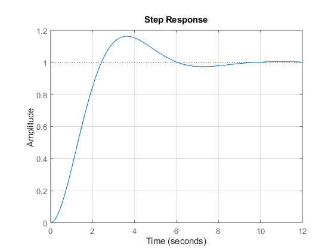
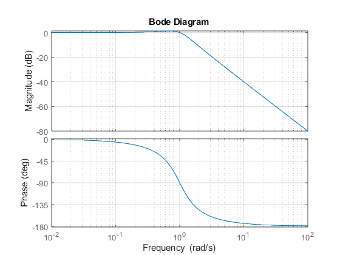
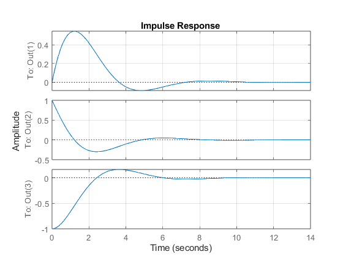
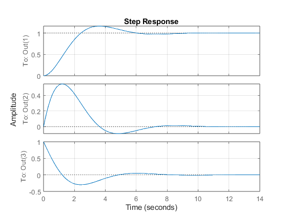
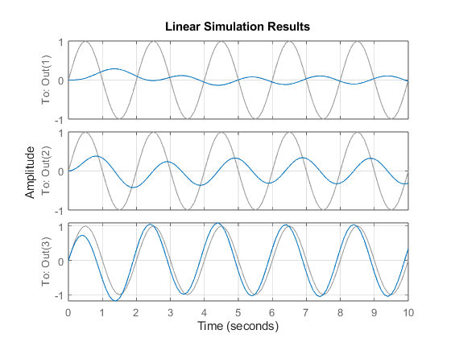
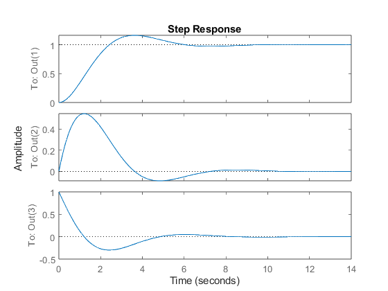
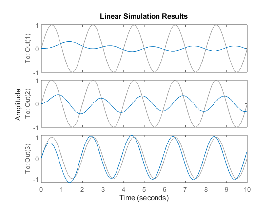

Contents
Laboratório de Sistemas dinâmicos
Prática 07 Data: 15/07/2024 Autores: Ana Clara Gomes & João Vitor Barbosa
%%Limpar Workspace clear all; close all; clc;
Script Prática 7
Exercicio 1 b, c, d, e )
m=1; c = 1; k = 1; G1=tf(1,[m c k]); figure(1); step(G1);grid('on'); figure(2); bode(G1);grid('on'); A = [0 1;-k/m -c/m]; B = [0;1/m]; C = [1 0;0 1;-k/m -c/m]; D = [0;0;1/m]; Gss = ss(A,B,C,D); figure(3); impulse(Gss);grid('on'); figure(4); step(Gss);grid('on'); W= 2 * pi * 0.5; t =0:0.1:10; u = sin(W*t); figure(5); lsim(Gss,u,t);grid('on');    
Exercicio 2 d)
m1=1;
m2=2;
k1=100;
k2=20;
k3=20;
b=12;
G1=tf([m2 b k2+k3],[m c k]);
G2 = tf(1,[m c k]);
A = [0 1;-k/m -c/m];
B = [0;1/m];
C = [1 0;0 1;-k/m -c/m];
D = [0;0;1/m];
Gss = ss(A,B,C,D);
figure(1);
step(Gss);
figure(2);
impulse(Gss);
W= 2 * pi * 0.5;
t =0:0.1:10;
u = sin(W*t);
figure(3);
lsim(Gss,u,t);
figure(4);
grid('on');
 